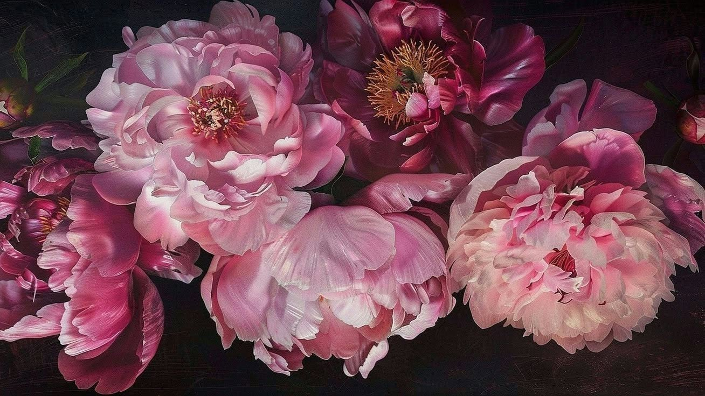
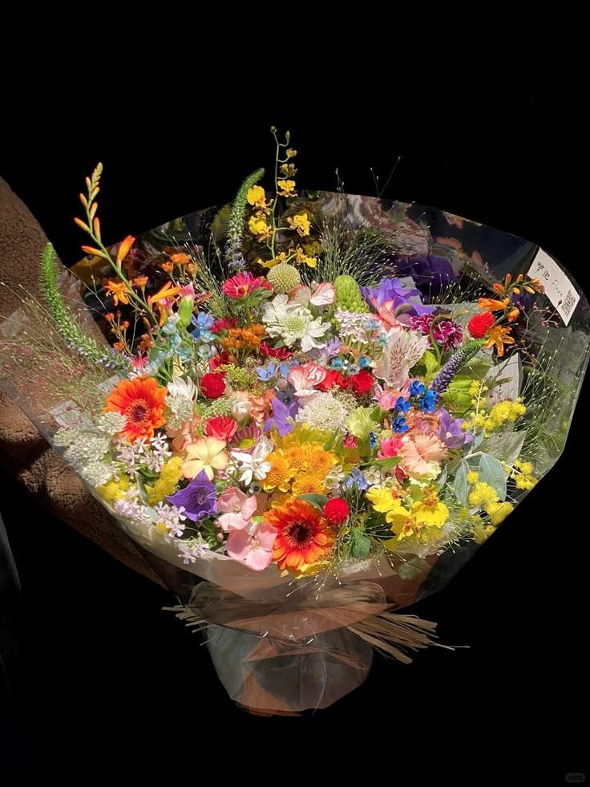

The Flower Page
A small page dedicated to a flower you apparently like.
A few months ago, I think, you put one of those little notes on Facebook, and I happened to see it.
And I remember thinking,
oh, so Faith likes peonies.
I don't think you ever actually told me that. I just happened to see that little note, remembered it, and apparently decided that months later, it deserved its own page. HAHAHA.

Peonies
one of your favorites

Thumbelina
your favorite bouquet
So here they are.
Your peonies, and your favorite bouquet, Thumbelina.
the little note that started this whole page
I guess that's one of the funny things about knowing someone. Sometimes they don't even have to tell you something directly. You just happen to notice a little thing about them, keep it somewhere in the back of your mind, and later find yourself making something out of it.
Anyway, here's a flower page you probably didn't ask for.